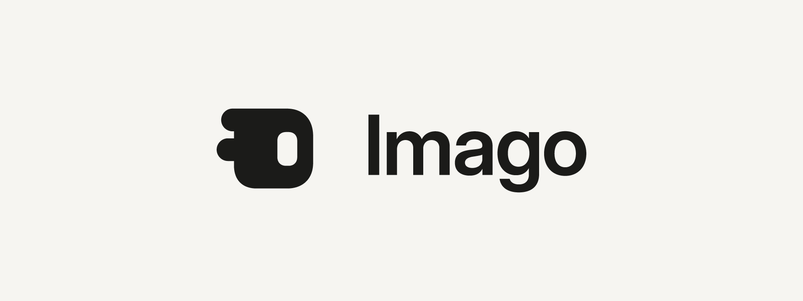

Design assignment · Web App – Branding & Promotional Design · Faculty: Aaron A
Branding Imago
Imago turns an API response into an interface: paste a URL and it draws the page the data deserves. This is its visual identity: a logo with the brand book behind it, an A4 print flyer and a blog banner. All three are made in Adobe Illustrator with Claude, and one idea connects them: raw data becoming something a person can read.
The brief, and the three files
One editable Illustrator file per task. Every requirement below was checked in the exported files themselves, not taken on trust.
| Task | Editable file | What the brief asks for, and what the file has |
|---|---|---|
| 1 · App logo | imago-task1-logo.ai | Original, simple, scalable; suitable colours and type; editable vector. The file is a 13-page brand book: the logo, what it means, how to use it, the mascot, colour and type. |
| 2 · A4 flyer | imago-task2-flyer-a4.ai | A4, CMYK, for print: PDF/X-4 with bleed; the PDF's trim box is exactly A4 and it holds no RGB. Logo and name, headline, key benefits, a visual, and a call to action with a working QR code. |
| 3 · Blog banner | imago-task3-blog-banner.ai | 1200 × 700 px, RGB. App identity, a headline, a relevant visual, and the same style as the logo and flyer. |
One idea across all three
Imago's promise is a change of form: a response goes in, an interface comes out. Every piece shows that, in the same two colours, with one colour kept for one meaning.
The idea
Data in. Interface out.
The mark tells it, the flyer and banner show it with a real weather response, and the name means it: imago is the finished adult form an insect reaches after metamorphosis.
Two colours, one meaning
Ink and paper carry everything. Amber means "this changed since the last fetch", as it does in the app, so it appears once per piece and only there. Green is the live dot, red is an error.
Type
Inter Display for headlines, Inter for text, JetBrains Mono for anything that is data: URLs, JSON, labels. The wordmark is Inter Display, outlined so it never depends on the font.
The logo, and the brand book behind it
The Reveal mark: two rounded bars (the keys and values an API sends back) join one body, and a window opens in it (the interface Imago finds in the data). One flat shape on a 32-unit grid, so it holds from a 16 px favicon to a poster.


13 pages, three chapters
The Task 1 file is the brand book itself. The logo and the mascot are drawn on its pages as editable vectors, not pasted in as pictures.
Logo


Mascot


System


Amigo, the mascot


Swap two letters and imago becomes amigo, Spanish for friend.
Amigo is the mark stood up: the same body and window, the two incoming fields becoming two legs. It has no face, arms or clothes; its personality comes from the words beside it.
It appears in loading and empty states, onboarding and success messages, never in the favicon, the app icon or dense data views. The Zs belong only to Amigo lying down.
The A4 flyer: a handout that makes the case
An A4 promotional flyer is held and read, not glanced at across a room, so it carries a short argument, not just a slogan. It is written for two readers: a skimmer who gets about 15 words, and a reader who gets about 130.

| The brief asks for | On the flyer |
|---|---|
| App logo and name | Top left, with who it is for: "For anyone who works with APIs" |
| Headline or tagline | "APIs become interfaces." |
| Key features or benefits | Reads the shape, Remembers it, Watches it change, each with one line; four plain facts in place of testimonials |
| Visuals | A real Open-Meteo response becoming its interface, and a three-step "how it works" |
| Call to action | "Paste your first endpoint." with the address and a vector QR code, 3.4 cm with its quiet zone, which decodes to the live site |
Built from research, in reading order (AIDA)
- Attention: the headline and the picture
- Interest: the problem ("Raw JSON is hard to read") and what Imago does about it
- Desire: three benefits, then the facts that build trust
- Action: free, no account, nothing to install; the link and the QR code
The blog banner: the picture that earns the click
A blog banner is the header image of a post, its card on the blog index, and the preview when the link is shared, where it is often shown 300 to 500 px wide. So it names the post, says the promise in a few big words, and shows one idea large enough to read small.

| Website hero | Blog banner | |
|---|---|---|
| Seen | On the site, full screen | In feeds and cards, 300–500 px wide |
| Interactive | Yes: live demo, paste bar | No: nothing looks clickable |
| Job | Turn a visitor into a user | Get a stranger to click |
| Words | As many as it needs | A few, in large type |

Three pieces, one identity
The same palette, type, mark and idea, at three sizes and for three jobs. All three are drawn by the same Illustrator scripts from one shared library, so a colour or a change to the mark reaches every piece.
Not the first answer
The brief asks not to accept the first AI-generated solution. These are the calls that changed the work, with the versions they replaced.
The flyer took three rounds
About 160 words

Four feature paragraphs and a long standfirst: a brochure, not a flyer. I asked what a promotional flyer is for.
29 words

Cut to a poster's glance. It undersold the product, so I asked for research on how much a promotional handout should carry.
About 130 words
Handouts carry 50 to 150 words, in AIDA order, with a skim layer and a read layer. The link and QR code became real once the live address was found.
The banner stopped copying the hero


Amigo's Zs moved

Kept on purpose: the mark
The logo is the app's existing Reveal mark, drawn exactly from its recorded geometry rather than redrawn. An exploration of alternative marks ran alongside and did not replace it.
Five files became three
The logo, the mascot and the guidelines began as separate files. They became one Task 1 brand book, with the logo and mascot woven into its pages, so the submission is one file per task.
Tools, and how it was made
Every piece is a real, layered Illustrator document. Illustrator drew them from scripts, so any piece can be rebuilt in seconds after a change.
Adobe Illustrator
All three files, all vector. Claude wrote Illustrator scripts (ExtendScript) that draw every shape and line of text, with named layers, swatches and artboards; Illustrator ran them and wrote the .ai files and exports.
Claude (Claude Code)
Research (what a flyer and a banner are for), copy, the scripts, and checking: every export viewed, the banner tested at 400 px, the print PDF checked for PDF/X, CMYK and trim, and the QR code decoded.
For the tool usage form
Adobe Illustrator
Claude
Not used: Photoshop. Nothing here needed pixel editing; the few raster images are exports of the vector files.
The flyer and the banner show Open-Meteo weather data and should carry its credit line, "Weather data by Open-Meteo.com".